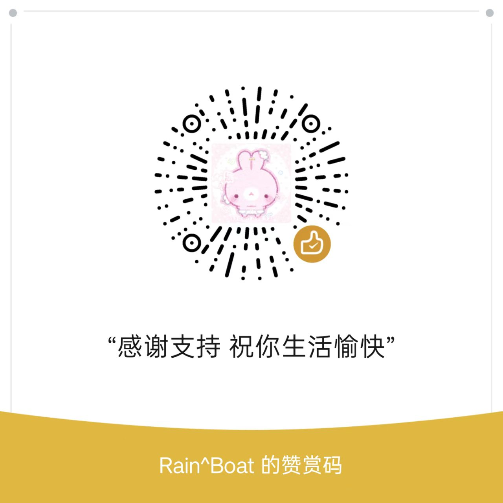

Soc智能限频
梦笙Mess1on & Ktwo ·
V2.5.2
连接中
已暂停
检测到你的 SoC：—
守护 PID
—
游戏名单
—
桥接
—
·
守护
V2.5.2
调度策略
限频
限频
固定百分比封顶
智能
六态状态机，百分比当天花板
CPU 封顶
按各簇硬件最高频排序自动分档
GPU 封顶
高通 KGSL / MTK Mali，按百分比向下吸附到实际频点
GPU
当前封顶
—
运行日志
刷新日志
‹
CPU / GPU 封顶
CPU 封顶百分比
按真实频点向下取整；100% 直接使用硬件最高频。
CPU 最低频（进阶）
0 = 跟随系统；不会高于该簇封顶。
GPU
封顶百分比
高通 KGSL / MTK Mali
45%
保存
套用本机预设
读取中…
省电
均衡
省电：低载更省；均衡：日常上限。两档都会打开动态封顶。
保存后立即生效，无需重启。
保存并生效
放弃修改
智能调度
实时监控
负载 / PSI / 温度 / 电流 / 各簇频率
智能监控
限频 ↔ 智能 · 六态目标
频率与偏移
CPU / GPU 封顶
四档百分比 · GPU 封顶 · 禁止 GPU Boost
实时偏移
插电 / 低电 / 发热 / 卡顿 四组
巡检与宽限
巡检间隔 · 游戏宽限 · 开机满血 · 调速器
Boost 与压制
CPU/GPU Boost · 动态封顶
Doze 睡眠
深度睡眠
开关 · 电流阈值 · 保持轮数
永久豁免
不进入深睡的应用
维护
完整日志
守护 / 深睡 / 启动看门狗
参数导入 / 导出
备份 / 迁移 socfreq.conf
‹
智能调度策略
调度策略
调度策略
限频按四档固定；智能按负载给目标，百分比只当天花板。
智能模式独占封顶：动态封顶和实时温控让位；游戏、满血、熄屏仍交还。
深度空闲
天花板 ×45%
双簇 主55 / 超大40
浅空闲
天花板 ×65%
双簇 主75 / 超大60
中载
天花板 ×85%
双簇 主90 / 超大80
重载
天花板 ×100%
持续高载
天花板 ×80%
双簇 主85 / 超大70
游戏
天花板 ×100%
前台命中游戏仍走交还系统
CPU 用全核平均：80/60% 滞回；GPU 90/80/65%。升 4s、降 10s，重载/游戏/持续高载带驻留。GPU 按状态只压不抬 40/45/60/85/80/100%；电流/功率只遥测，不参与选档。
六态参数
展开设置
先选状态，再调该状态的上限和下限；0 = 不设下限。
当前：—
高级阈值
机身多热开始压到持续高载、降到多凉才松手。其余阈值、窗口和驻留按内置参数固定，不开放。
保存
保存后守护自动重算封顶值并立即生效，无需重启手机
保存并生效
放弃修改
‹
实时偏移
现在这台机器会怎么做
正在读当前设置…
实时偏移只影响当前生效值，不改这里显示的设定值。
插着电的时候
插着电时发热由充电器承担，压它没意义；拔电会自动回到你设的值。
要不要放松
选一个就行
自己定具体数值
充电态放宽
开关：关掉就是插不插电都按设定值压
插电抬到
20-100%，100% 等于插电时不封顶
100%
电量低的时候
低电量时再收紧；插电不生效。
低电量再压一点
关掉后电量再低也不额外收紧
自己定具体数值
低于多少开始压
5-95%
20%
第一刀收紧
0-30%
−5%
低于多少再叠一刀
必须低于上面那个；1-95%
10%
第二刀再收紧
0-30%，和第一刀叠加
−10%
机身发热的时候
到温度逐档下压，凉下来逐档放开。
降速时机
拿不准就选「适中」
自己定具体数值
温控开关
关掉后温度再高也不主动降（系统自己的保护仍在）
开始降的温度
35-110℃。数字越小越早就开始降，机器更凉、也更慢
75℃
放开的温度
必须比上面那个低，中间这段保持不动，不然会在阈值附近来回抖
68℃
最多降多少
最多比你设定值低这么多。设 65%、这里填 25， 就是降到 40%（不是 65%×75%）。0 = 不主动降
−25%
CPU 排队偏高的时候
CPU 排队明显偏高时临时放宽；温度在压档时不借。
要不要借
拿不准就选「适中」
自己定具体数值
PSI 护栏
关掉后 CPU 排队再高也不会放宽
最多借出
0-30%：一次放宽的总量上限，填 0 = 关掉这条。 设 65%、这里填 10，就是临时放宽到 75%
+10%
保存
和「配置」页共用同一份保存动作：一次把两页的改动都写进去并立即生效
保存并生效
放弃修改
‹
Boost 与压制
动态封顶
亮屏按负载收放天花板；游戏、满血、熄屏、插电暂停。
具体压制项
频率三档 + 静置压下限；uclamp.max/cpuset/hispeed 按档切换，刻度自适应。
动态封顶
低载时逐档收天花板，高载再放回。
智能模式接管时不生效，开关仍保留你的选择；切回限频后按这个开关恢复。
压制风格
均衡：90/80%；省电：85%/960MHz；持续高载才回升。
升频 / 降频限速微调
单位 µs。默认随风格：均衡 升 500 / 降 0，省电 升 3000 / 降 500（所有簇相同）；手改后按你的值。
超大核
检测中…
升
降
大核
检测中…
升
降
小核
检测中…
升
降
禁止 GPU Boost
一个开关同时管三件事：压回下限、关 DCVS/触摸抬频、空闲少空转。
CPU 省电
超大核降到最低频
把最高频簇的
上限
压到最低可用频点，不是最低频；最低频在「CPU 最低频」里单独设。游戏/满血/熄屏交还仍会放开
超大核离线
常态直接关闭超大核；游戏、满血应用和开机满血窗口会自动上线，约需 1~2 秒。熄屏保持离线
CPU 下限锁到底
常态把最低频压到硬件最低；动态封顶开启时让位。
CPU 下限巡检：未开启
保存
和「配置」页共用同一份保存动作：一次把所有页的改动都写进去并立即生效
保存并生效
放弃修改
‹
永久豁免
永久豁免
名单内不受 Doze 限制；深睡关闭时也会写白名单。
＋ 添加应用
刷新
显示系统应用（含服务/组件）
‹
智能监控
实时
每 2 秒刷新一次，直接读守护写出的
run/status
，不额外起进程。
各簇封顶
最近事件
‹
完整日志
完整日志
三份日志合并；默认尾部，全部最多 4000 行。
行数
刷新
导出 txt
‹
巡检与宽限
巡检
巡检间隔
压回被顶高上限的周期（2-60 秒）
5s
退出宽限
游戏退到后台后保持解锁（2-300 秒）
30s
开机满血
开机后前若干秒不封顶（0 = 关）
60s
熄屏保持封顶
开：熄屏继续封顶；关：熄屏交还系统。
日常调速器
选「不干预」会还原原调速器；hmbird/scx 不改写
保存
保存后守护自动重算封顶值并立即生效，无需重启手机
保存并生效
放弃修改
应用分类
视频 / 社交 / 阅读按场景覆盖当前封顶；CPU / GPU 0 = 跟随全局。
视频
管理应用
GPU 上限
0 = 跟随当前封顶百分比
跟随
保存分类参数
撤销修改
游戏白名单
前台命中即解除 CPU / GPU 封顶，本机已装
0
个
添加
分应用档位
优先于全局：满血交还系统；熄屏只看那一刻前台；相机默认满血。
＋ 添加应用
刷新
新加这条用哪一档
点下面的应用就按这个值写入
自定义 CPU 百分比
1 ~ 100，CPU 四簇统一
分核
大核 / 小核分别设；1~100，两项都要填。中间档跟随全局
GPU 上限
跟随全局，或给这个应用单独设一道；满血时不需要
自定义 GPU 百分比
1 ~ 100；只压游戏/录像这类 GPU 负载才有意义
显示系统应用（含服务/组件）
可能是游戏、还没进名单
候选不会自动生效，点 ＋ 才加入。
重新扫描
‹
深度睡眠
深度睡眠
熄屏未充电 60 秒后尝试 Doze；不冻结进程，白名单/推送/IM 同步进系统 Doze。
自动深度睡眠
熄屏后让系统进 Doze 深度空闲，并把 push / 短信 / 媒体临时加白；关闭则完全不碰系统 Doze
读取中…
唤醒榜
深睡期间各应用靠闹钟把系统叫醒的次数。白名单应用被叫醒是正常的，用绿色标出。
本次深睡
累计
模块信息
外观与动效
液态玻璃是唯一外观。玻璃质感和动效可在下面调，卡顿就往低一档。
支持作者
免费更新，欢迎支持。

微信
支付宝
维护
停止并恢复可临时关闭限频；暂停后看门狗不再拉起守护
重启守护
暂停
恢复
停止并恢复
退出安全模式
恢复全部默认
退出安全模式会删除标记并重启守护。
恢复默认会重置百分比、偏移、深睡、分应用档位和应用分类；游戏名单、词典、主题保留。
参数导入 / 导出
导出/导入 socfreq.conf；只接受已知键，全部成功才替换。
打开导入 / 导出
导出当前参数
复制
导入并生效
清空
芯片适配
核心表或 GPU 读不到时导出，适配后随版本生效。
正在看探测结果…
导出适配包
首页
功能
应用
关于